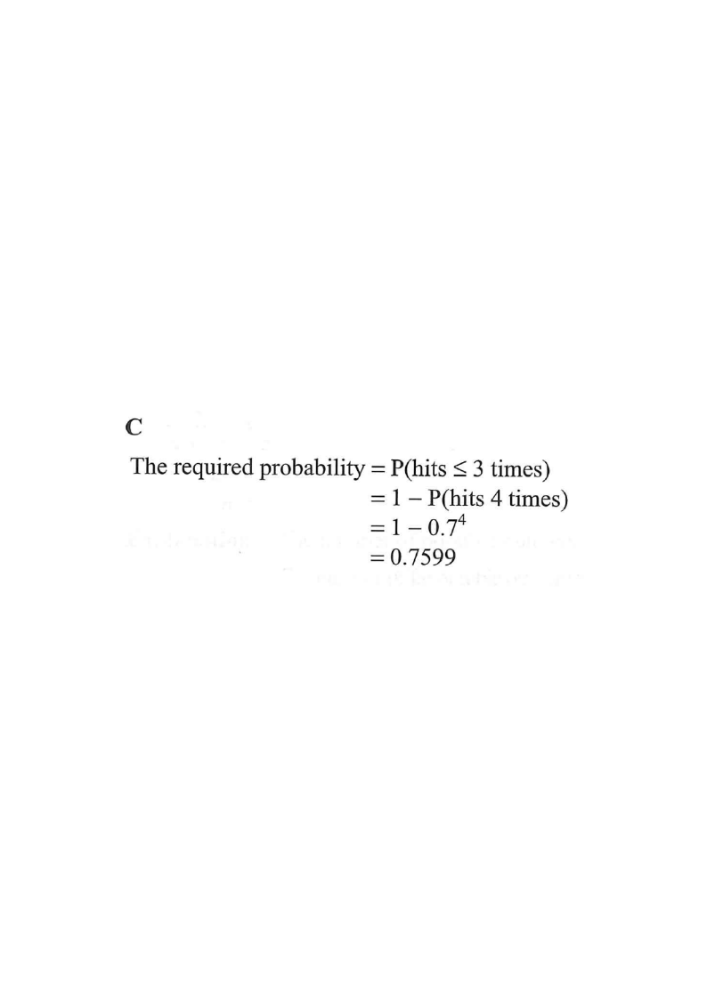

Step 1 — the given information: $p=0.7$, $n=4$ throws.
Hit (H)Miss (M)Highlighted branch
HKDSE 2017 · Paper 2 · Q43
14. Probability
[2017MC#43]
When Teresa throws a dart, the probability that she hits the target is $0.7$. If Teresa throws the dart $4$ times, find the probability that she hits the target at most $3$ times.
A. 0.0081
B. 0.2401
C. 0.7599
D. 0.9919

Figure (original exam diagram)
1
Identify the situation
Each throw is an independent trial with only two outcomes:
$\quad$ hit with probability $p = 0.7$,
miss with probability $1-p = 0.3$.
There are $n = 4$ throws, so this is a binomial setting.
Hint: "At most 3 times" = hit $0,1,2$ or $3$ times — that is, every case except hitting all $4$.
2
Complement Rule\(P(X\le3)=1-P(X=4)\)Every outcome except four hits is counted, so subtracting the single case \(X=4\) is fastest.
Use the complement (fastest route)
Since the only case excluded is "hits all 4 times",
Hint: The complement rule avoids adding four separate terms.
3
Multiplication Law for Independent Events\(P(\text{all hit})=0.7\times0.7\times0.7\times0.7=0.7^{4}\)The throws are independent, so the four hit probabilities are multiplied, giving \(0.2401\).
Compute the single "all-hit" case
Independent throws, so multiply the probabilities:
Hint: This matches option C exactly — a strong confirmation.
5
Binomial Distribution\(P(X=k)={}^{n}C_{k}\,p^{k}(1-p)^{n-k}\)With \(n=4\) and \(p=0.7\), summing the terms for \(k=0,1,2,3\) gives \(0.7599\), the same value.
(The only excluded term is ${}^{4}C_{4}(0.7)^4 = 0.2401$.)
Hint: Note option A is $0.3^{4}$ (hits 0 times) — a classic trap.
Answer: C — the probability that Teresa hits the target at most 3 times is $0.7599$.
PRACTICESimilar question — try it yourself
Question. The probability that a player hits a target in one throw is \(0.6\). The player throws \(5\) times. Find the probability that the target is hit at most \(4\) times.
Show the worked solution
Step 1. Each throw is independent with \(p=0.6\), so this is a binomial setting with \(n=5\).
Step 2. "At most \(4\) times" is the complement of "hit all \(5\) times": \(P(X\le4)=1-P(X=5)\).
Step 3. \(P(X=5)=0.6^{5}=0.07776\).
Step 4. \(P(X\le4)=1-0.07776=0.92224\).
Step 5. Check by the binomial formula: \(\sum_{k=0}^{4}{}^{5}C_{k}(0.6)^{k}(0.4)^{5-k}=1-{}^{5}C_{5}(0.6)^{5}=1-0.07776\) ✓.